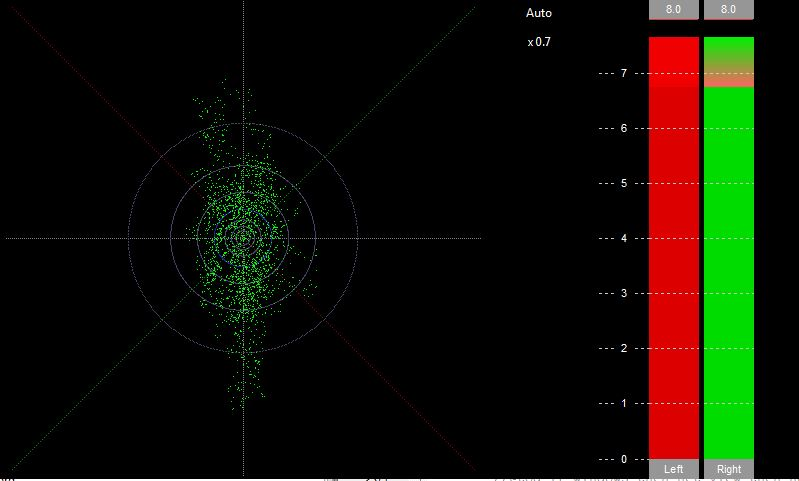
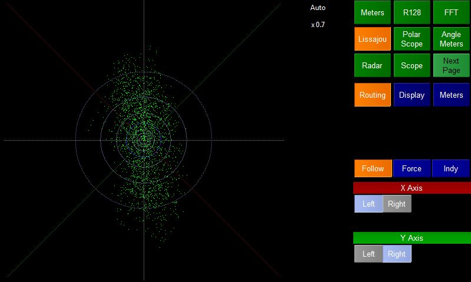
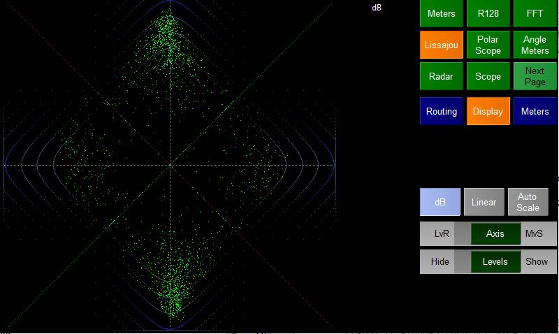

The Lissajou plugin shows a Lissajous curve on the left hand side and a pair of audio meters on the right.
The curve is generated by plotting the amplitude of each sample of the left channel on one axis against the ampltidude of the correspondong right channel sample.

The Routing option page allows the user to decide what channels are plotted on each axis.
First the user needs to decide on the routing mode:
The available channels are listeed below the X-axis and Y-axis labels. In Follow mode they be disabled. Note it is possible to choose the same channel for both axis.

The display mode allows the user to change how the Lissajou curve is displayed.
The label at the top right of the Lissajou meter shows the current display mode and also the amount of expansion of the audio in Auto scale mode.
The LvR/MvS Axis switch decides what the X-Y axis represent:
The Hide/Show Levels switch either hides or displays a PPM scale. PPM 4 is shown in blue.
The meters option page allows the user to choose between the 4 basic meter types for the audio meters on the right hand side of the screen.
PPM
Shows a digital Peak Program Meter. The ballistics
and algorithm are taken from BBC R&D baptools code. The scale is
from 0-7
Sample Peak
Shows the highest sample value for each chunk of incoming audio.
Energy
Shows the Root Meam Square energy of each chunk of incoming audio
LKFS
Shows the Loudness of incoming audio integrated over 16 seconds. This is taken from the BBC R&D baptools code.